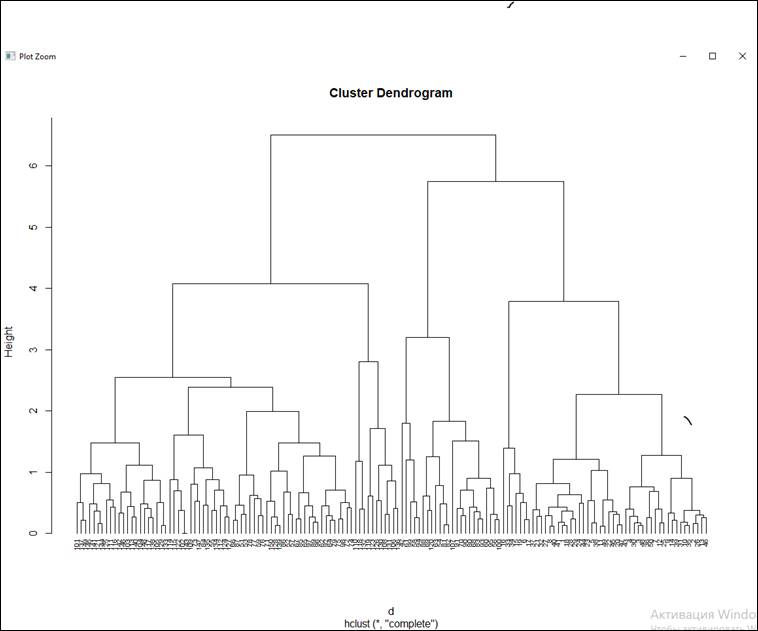
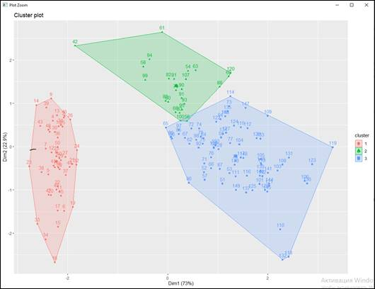
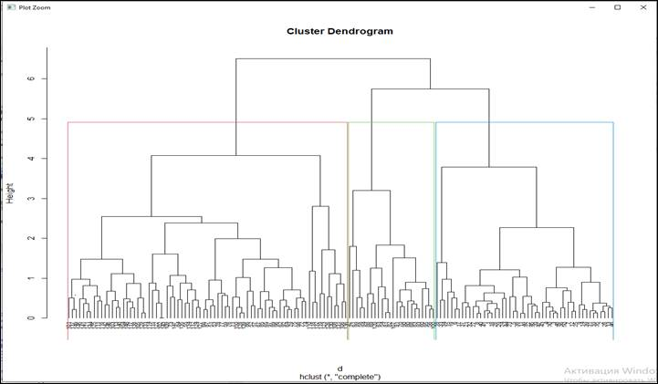
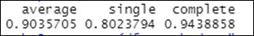
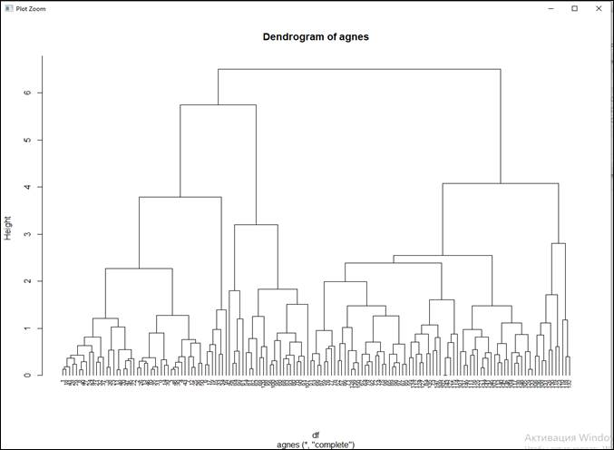
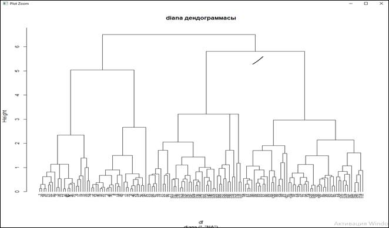

5. Үлкен
деректерге иерархиялық кластеризация әдісін қолдану
Мақсаты: Иерархиялық кластерлік
талдау мен оның R программалау тілінде жүзеге асырылуын
қарастыру
Алдыңғы практикалық жұмыста k-means кластерлік
талдау мүмкіндіктері мен R программалау ортасында жүзеге асырылуын
қарастырған болатынбыз. Бұл практикалық жұмыста
кластерлеудің екінші түрі иерархиялық кластерлеу түрін
қарастырамыз.
Иерархиялық кластерлік талдау кластерлердің иерархиясы немесе
берілген тәртібі бар кластерлеу әдісі болып табылады.
Иерархиялық кластер-лерді дендрограмма деп аталатын ағаш
құрылымы арқылы көрсетуге болады. Иерархиялық
кластерлеудің екі түрі бар:
Агломеративті иерархиялық кластерлеу: бұл әр деректер
нүктесі өз кластерінде басталады және иерархияны жоғары
жылжытқанда, кластерлердің ұқсас жұптары
біріктірілетін төменнен жоғарыға бағытталған
тәсіл.
Бөлінетін иерархиялық кластерлеу: бұл барлық
деректер нүктелері бір кластерде басталады және иерархия бойынша
төмен жылжыған кезде кластерлер рекурсивті түрде
бөлінеді.
Деректер жұбының арасындағы ұқсастықты
немесе айырмашылықты өлшеу үшін біз
қашықтық өлшемдерін (Евклидтік
қашықтық, Манхэттен қашықтығы және
т.б.) пайдаланамыз. Дегенмен, бақылаулардың екі кластері
арасындағы айырмашылықты табу үшін агломерация
әдістерін қолданамыз. Агломерацияның ең көп
тараған әдістері:
- Толық сілтеме кластерленуі: екі кластердегі бақылаулар
арасындағы барлық жұптық айырмашылықтарды
есептейді және екі нүкте арасындағы ең ұзын
(максималды) қашықтықты екі кластер арасындағы
қашықтық ретінде қарастырады.
- Бір буынды кластерлеу: екі кластердегі бақылаулар арасындағы
барлық жұптық айырмашылықтарды есептейді және
ең қысқа (ең аз) қашықтықты екі
кластер арасындағы қашықтық ретінде қарастырады.
- Орташа сілтеме кластерленуі: екі кластердегі бақылаулар
арасындағы барлық жұптық айырмашылықтарды
есептейді және орташа қашықтықты екі кластер
арасындағы қашықтық ретінде қарастырады.
R ортасында иерархиялық кластерлеуді есептеу үшін келесі
функциялар пайдаланылады:
- агломеративті иерархиялық кластерлеу үшін stats
бумасындағы hclust және cluster пакетіндегі agnes.
- бөлінетін иерархиялық кластерлеу үшін cluster пакетіндегі
diana.
Алдыңғы практикалық жұмыста
қарастырылған ирис гүлінің деректер жинағын
қолданамыз. Деректер нүктелері ретінде біз жапырақшаның
енін, гүл жапырақшасының ұзындығын,
жапырақтың енін және гүл жапырақшасының
ұзындығы бағанын қолданамыз. Алдымен деректерді
жүктеп, қалыпқа келтіреміз. Ұқсассыздық
мәндері dist функциясы арқылы есептеледі және бұл
мәндер иерархиялық кластерлеуді орындау үшін кластерлеу
функцияларына беріледі.
Ең алдымен қажетті пакеттерді жүктейміз
//ирис гүлінің деректер жинағын қамтиды
library(datasets)
// алгоритмдерді кластерлеу
library(cluster)
// визуализация
library(factoextra)
// map_dbl() функциясын
қолдану
library(purrr)
# мәліметтер жинағын
жүктеп алдын ала өңдеу
df <- iris[, 1:4]
df <- na.omit(df)
df <- scale(df)
# айырмашылық матрицасы
d <- dist(df, method = "euclidean")
Агломеративті иерархиялық
кластерлеуді жүзеге асыру
Алынған
ұқсастық матрицасы(dist) hclust-ке беріледі. hclust
әдісі параметрі қолданылатын агломерация әдісін
анықтайды (яғни, толық, орташа, жалғыз). Содан кейін
біз дендрограмма құра аламыз.
// Толық орналасуды (complete) пайдалану арқылы
иерархиялық кластерлеу
hc1 <- hclust(d, method = "complete" )
// дендограмма тұрғызу
plot(hc1, cex = 0.6, hang = -1)
Сурет 40-ғы дендограммада
жапырақ (лист) бір бақылауға сәйкес келетінін
аңғаруға болады және ағашты жоғары
жылжытқанда ұқсас бақылаулар жоғары биіктікте
біріктірілетінін ескеру қажет. Дендрограмманың биіктігі
кластерлерді анықтайды. Кластерлерді анықтау үшін
дендрограмманы cutree көмегімен қиюға болады. Содан кейін
factoextra пакетіндегі fviz_cluster функциясын пайдаланып нәтижені
шашыраңқы сызба ретінде визуализация жасауға болады.
# ағашты 3 топқа бөлу
sub_grps <- cutree(hc1, k = 3)
# Нүктелі диаграмма көмегімен визуализациялау
fviz_cluster(list(data = df, cluster = sub_grps))

Сурет 40- Кластер дендограммасы

Сурет 41- Нүктелі диаграмма
Төменде
көрсетілгендей 3 кластердің айналасында дендрограмманың
шекарасын да бере аламыз.
//Алынған дендрограмманы k
кластер үшін тіктөртбұрыштың шекарасын пайдаланып
сызамыз.
plot(hc1, cex = 0.6, hang = -1)
rect.hclust(hc1, k = 3, border =
2:4)

Сурет 42- Кластерге бөлінген дендограмма
Иерархиялық кластерлеуді
орындау үшін agnes функциясын пайдалана аламыз. Оның Hclust-тен
айырмашылығы agnes функциясы анықталған кластер
құрылымының дәрежесін өлшейтін агломерация
коэффициентін береді (1-ге жақын мәндер күшті кластер
құрылымын көрсетеді).
//агломерациялық
бағалау әдістері
m <- c("average",
"single", "complete")
names(m) <-
c("average", "single", "complete")
# иерархиялық есептеу функциясы
# кластерлік коэффициент
ac <- function(x) {
agnes(df, method = x)$ac
}
map_dbl(m, ac)

Сурет 43- Иерархиялық есептеу функциясының нәтижесі
Толық байланыс күшті
кластер құрылымын береді. Сонымен, біз төменде
көрсетілгендей agnes функциясымен иерархиялық кластерлеуді орындау
үшін осы агломерация әдісін қолданамыз.
# иерархиялық кластерлеу
hc2 <- agnes(df, method =
"complete")
# дендограмма салу
pltree(hc2, cex = 0.6, hang = -1,
main = "Dendrogram of agnes")

Сурет 44-Иерархиялық кластерлеу дендограммасы
Бөлінген кластерлеуді
жүзеге асыру
Agnes функциясына
ұқсас жұмыс істейтін diana функциясы бөлінген
иерархиялық кластерлерді орындауға мүмкіндік береді.
//бөлінген
иерархиялық кластерлеуді есептеу
hc3 <- diana(df)
//бөлу коэффициенті
hc3$dc
//дендограмманы салу
pltree(hc3, cex = 0.6, hang = -1,
main = " diana дендограммасы")
Нәтижесі
[1] 0.9397208

Сурет 45- Диана дендограммасы
Сонымен, дендограмма дегеніміз
иерархиялық кластерлеу нәтижелерін көрсету үшін
қолданылатын визуализатор. Ол жекелеген объектілер мен
кластерлердің жақындық дәрежесін көрсетеді,
сонымен қатар олардың ассоциациялану немесе бөліну реттілігін
графикалық түрде бейнелейді.
Иерархиялық кластерлеу
кластерлеудің басқа түрлерінен қарағанда
қашықтық пен ережелердің ұқсастығын
анықтау оңай және бірнеше шектеулер бар: кластер санын алдын
ала орнатудың қажеті жоқ, иерархиялық класс
қатынастарын анықтауға болады, сонымен қатар
басқа пішіндерге кластерлеуге болады.
Тапсырмалар:
1. ТМД елдері бойынша импортталатын азық-түлік тауарлары бойынша
иерархиялық кластерлеу әдісі бойынша объектілердің
классификациясын жасаңыз.
2. Иерархиялық кластерлеу әдісі көмегімен компания
жұмысшы-ларының 3 жыл соңында айлық
жалақысының өзгерісі туралы талдау жүргізіңіз.
Бақылау сұрақтары:
1.
Иерархиялық
кластерлеудің үлкен көлемді деректермен жұмыс істеуде
қандай маңыздылығы бар?
2. Иерархиялық кластерлеу әдісінің орындалу алгоритмін
сипаттаңыз.
3. Иерархиялық кластерлеу әдісінің k-means кластерлеу
әдісінен қандай айырмашылығы бар? Сіздің
ойыңызша, қай кластерлеу әдісі тиімді?
4. Дендограмма дегеніміз не? Оны құру үшін қандай
функция қолданылады?